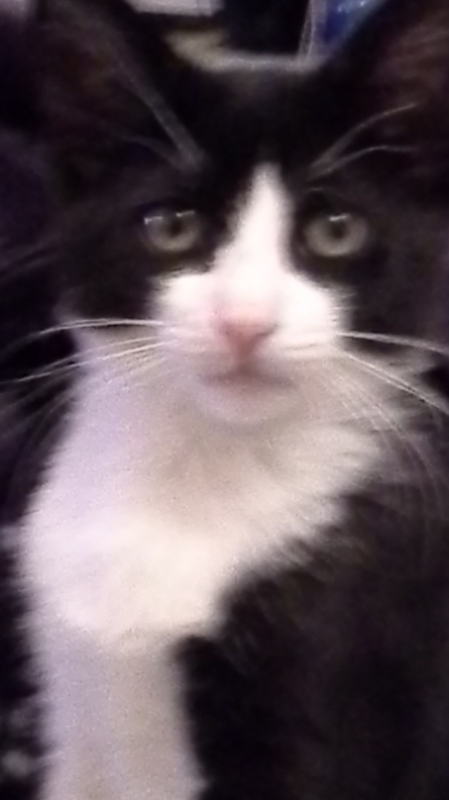

About Me
Being a full-stack web developer, I love my work. Before taken this opportunity, I was a power plant maintenance engineer having several successful stories covered by different medias such as print media and TV. I was successful manager to operate a power plant company had good relation with financial institutions and was raised fund 1 billion for 1000 mw power plant project . Those projects are operating successfully. I believe that determination is everything. It's a common question why did I switch in web development profession? Well, all of my work experiences are earned aboard and haven't any US professional license to work here. So, I couldn't find any a suitable commensurate job with my experience. Switch in was inevitable.
 I am so confident to become a successful web developer because I know how to develop a company and what are the tools to become successful in profession. I believe, a full stack developer is someone who can handle end to end product development. Hopefully I would be able utilized my previous project expertise know in web development career. Well, this one part of life. The other part is I love so much my cat. He waits curiously until I return home. Most interestingly, the day of adaption when my kitten was 6 weeks old and my daughter asked him after brought him home, hey! what's your name. He replied instantly 'Meow'. The name of my cat is Meow from that day.